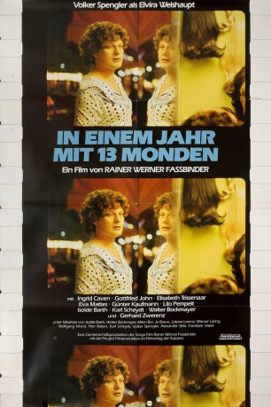

#10700 In einem Jahr mit 13 Monden
Alternativ: In a Year with 13 Moons (Englischer Titel)
 
 IMDB-Wertung: 7.7 / 10
IMDB-Wertung: 7.7 / 10  Metascore: 0
Metascore: 0 
Frankfurt am Main, Sommer 1978: Elvira Weishaupt, eine Transsexuelle, rekapituliert ihr Leben, die Kindheit des Knaben Erwin im Kloster, die Arbeit als Schlachter, die Ehe mit Irene, der Tochter des Metzgermeisters, und die Operation in Casablanca. Doch auch die Geschlechtsumwandlung hat Elvira kein glücklicheres Leben gebracht. Weiterhin erfährt sie nur Ablehung: Von ihrem Freund Christoph wurde sie verlassen, die Tochter hat sich abgewendet und der Mann, für den sich Erwin hat umoperieren lassen, will nun auch die Frau Elvira nicht lieben. So streift sie die letzten fünf Tage ihres Lebens gemeinsam mit der „Roten Zora“ durch das albtraumhafte Frankfurt.
Jahr: 1978
Dauer: 124 Minuten
FSK: 18
Land: West-Deutschland Studio: Arthaus FilmverleihTonspuren:
Untertitel:
Auflösung: 1080p (1792x1080) Größe: 7833 MB
Genre: Drama
Regisseur: Rainer Werner Fassbinder
Drehbuch: Rainer Werner Fassbinder
Soundtrack: Peer Raben
Darsteller:
- Volker Spengler als Erwin / Elvira Weishaupt
 Ingrid Caven als Die rote Zora
Ingrid Caven als Die rote Zora Gottfried John als Anton Saitz
Gottfried John als Anton Saitz- Elisabeth Trissenaar als Irene Weishaupt
 Eva Mattes als Marie-Ann Weishaupt
Eva Mattes als Marie-Ann Weishaupt Günther Kaufmann als J. Smolik, Chauffeur
Günther Kaufmann als J. Smolik, Chauffeur Isolde Barth als Sybille
Isolde Barth als Sybille- Lilo Pempeit als Schwester Gudrun
 Karl Scheydt als Christoph Hacker
Karl Scheydt als Christoph Hacker- Walter Bockmayer als Seelenfrieda
- Peter Kollek als Saeufer
- Bob Dorsay als Selbstmörder
- Gerhard Zwerenz als Burghard Hauser, Schriftsteller
- Janez Bermez als Oskar Pleitgen (uncredited)
- Günther Holzapfel als Angestellter H. H. Brei (uncredited)
- Ursula Lillig als Putzfrau (uncredited)
Datei: X:\FSK18-1900-1999\In einem Jahr mit 13 Monden (1978, FSK18, 1792x1080).mkv seit 22.02.2019
Festplatte: FSK18
 Es gibt insgesamt 108 Filme in der Gruppe 'FSK18-1900-1999'
Es gibt insgesamt 108 Filme in der Gruppe 'FSK18-1900-1999'